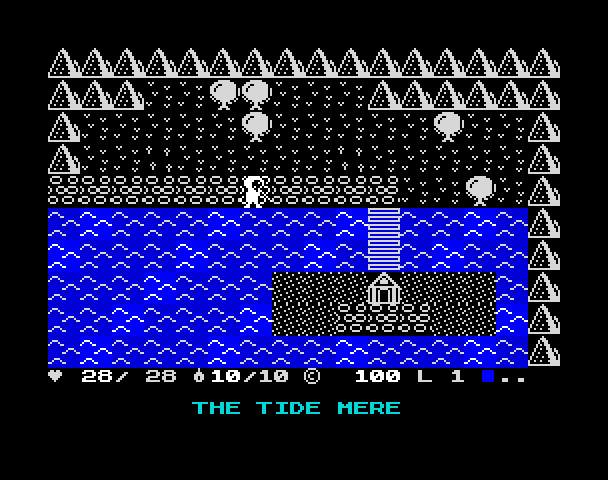

128K20 November 2026
The music: ten tunes on the AY
Ten original tunes for the 128K's AY chip: the title in D major, whose theme comes back at the end and again, half-remembered, in a music-box waltz; the Vale, a town waltz, a dungeon with an echo, a fight, a guardian, the Grey Tower and a victory jingle. Here as our emulator plays them, each twice through (the jingle once).
The music runs from the interrupt, 50 times a second, and the game goes on around it. Each place has its tune: the Vale out of doors, the towns, the shrines, the tower. A fight starts its own, and a guardian has a harder one. Winning plays a jingle, and the ending brings the title's theme back.
The title, 24 s
The Vale, 28 s
A town: a waltz, 23 s
A shrine, with its echo, 23 s
A fight, 18 s
A guardian, 15 s
The Grey Tower, 21 s
Victory, 2 s
The ending, 33 s
A memory: the title's theme as a music-box waltz in D minor, 20 s

How it works
Register streams
The tunes are written as notes in JavaScript and compiled to streams of AY register changes, frame by frame: only what changed, behind a mask saying which registers. Playing is cheap: the interrupt pages in the music's bank, writes a frame and pages back. Fifteen sound effects (a step, a hit, a spell, a chest, a level up, the freeze, burn and grow of the three inks) borrow channel C for a moment and give it back.
In the 128K's spare banks
All ten tunes are 32,269 bytes of streams, in three of the 128K's extra memory banks, out of the way of the game: two of them, and the end of the bank that holds the pictures.
How it was checked
A check plays every tune through the AY in our emulator and measures it: its length, each channel's range of pitches, and no clicks where a note starts. The recordings on this page are that check's own. Not yet heard on a real 128K.
Screens
As our emulator draws it
Full frames, border and all. Click a picture to see it bigger.


Download
Load it yourself
For the 128K. Three tapes, one game. inkwright-turbo.tzx lets you make your apprentice while it loads, in 3 minutes; inkwright-special.tap does the same at the ROM's own speed, in 6. Both must play in real time, as a cassette does (a real 128K, or ZX Spin or Retro Virtual Machine with fast loading off). inkwright-normal.tap loads the ordinary way and works in any emulator, even ones that load instantly; the game asks the same questions when you pick NEW JOURNEY. Not sure? Take the normal one.
- It needs a 128K (a 128K or a grey +2). Pick Tape Loader. On a 48K the tape says it needs a 128K and stops.
- Two tapes, one game: pick by how your emulator loads. Once you are playing they are exactly the same.
- The special tape,
inkwright-special.tap, has the loading page: while it loads you type your name and choose a keepsake and a cloak, with a candle burning down beside you. The Spectrum's own loader can't do that, so the game reads the tape itself, and the tape has to play in real time, the way a cassette does. Use it on a real 128K, or in ZX Spin or Retro Virtual Machine with instant and fast loading switched off. It takes about six minutes. - The normal tape,
inkwright-normal.tap, loads the ordinary way, through the Spectrum's own loader, so it works in every emulator, including the ones that load a tape instantly (Fuse with fast loading, phone and web emulators). There is no loading page: when you pick NEW JOURNEY the game asks the same questions on its own screens. Not sure which? Take this one. - Saving: at an inn, start the emulator's tape recording, then say yes. To carry on later, load that tape with Load from tape on the title.
- On a real Spectrum: play the tape into the EAR socket from a tape player or a TZX player.